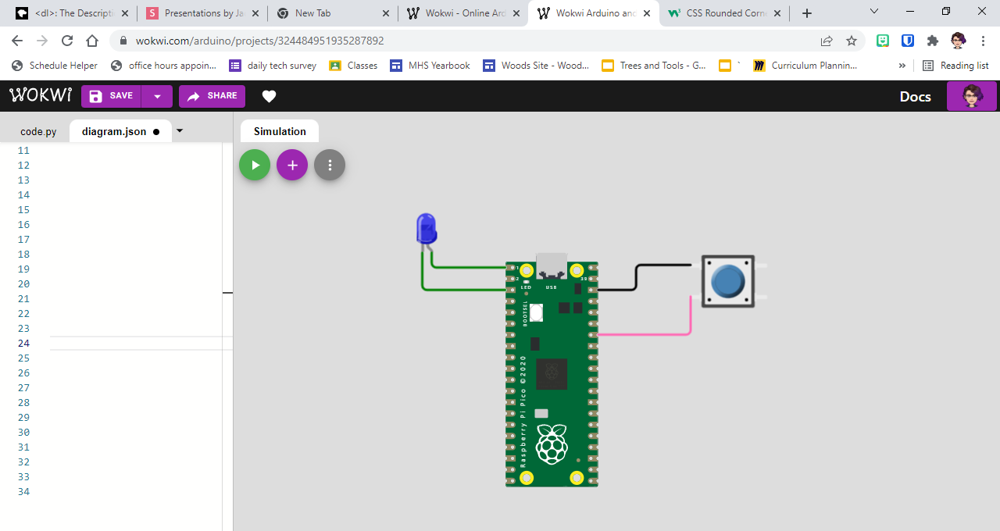

Exercise 9 - Conditional Statements
Goals
- Write and modify conditional statements
- Use conditional statements to create branching logic
Preparation
- You may work with the circuit simulator or a physical circuit
- Go to Wokwi and create a new CircuitPython project by clicking the button, then choosing
CircuitPython on Raspberry Pi Pico - Find the button and add a pushbutton to your circuit. It should like something like the circuit below

Concepts & Vocabulary
- Conditional statement
ifelifelse- logical test/test condition
Explanation - Conditional Statements
A conditional statement allows your code to make decisions.
If statement
An if statement is the simplest version of a conditional statement:
1 | |
In code:
Limitations of the if statement
An if statement will run if a condition is true. If that condition is not true, nothing happens. But sometimes, that's not what you want. For instance, imagine if you were deciding what to eat for lunch.
1 | |
In this example, you probably still want to eat something for lunch. Alternatively, you might look at this as:
1 | |
The problem there is that if there isn't pizza, you just don't eat anything. If the button isn't pushed, the LED still stays on once you've turned it on. Sometimes, you can fix this by creating if statements for every possible condition.
1 2 | |
This works pretty well if you have a well defined set of possibilities like the button, which can only be in one of two states. There's a couple of problems with this option, though:
- We have to check every if statement, which slows down the code
- We have to identify every possibility, which isn't always an option (do you really want to list out every food you might eat for lunch?)
- Sometimes it might be important to stop checking after you find a true option. Consider the following example:
What will print if student_score is 68 as shown above? What if you change it to 75? How about 85? Or 95? If you're not sure, try running the code! It won't do anything to your LED, but it will run just fine and will print to the serial monitor. We'll come back to this example in a little while.
Else Statement
You can chain if and else together to create a more advanced conditional statement.
1 2 3 4 5 6 7 8 | |
The way this works is that if the conditional test for the if statement is true, the indented code under if will run, and the computer will skip else. If the test isn't true, the if statement is skipped and the indented code under else will run. If you want to see this in action, make sure you've got a button set up correctly and try the code below:
Elif Statement
So now you can do if and else, but what if you have more than one thing to check for, like the grades example above? That's where the elif statement comes in.
You'll always have exactly one if statement in a chain. You can have at most one else. But you can have as many or as few elif statements as you want. An elif statement is an if statement that will only be checked if the statement before it in the chain doesn't run. For example, we can fix the grades example using elif and else:
In this version, as soon as one of those statements is True, we'll print out what score the student earned, and then exit. If none were true, the student failed so that's the message we print.
Try It
Based on what we covered in class and what's reviewed in this document, demonstrate that you can use a button and a conditional statement to control an LED
Show me your code in action
- 5 points: You successfully control an LED with a button using both
ifandelse. This should be based on programming, not directly hooking the LED up to the button - 4 points: You can successfully control the LED using at least an
ifstatement - 3 points: You can do something with a conditional statement
- Anything less will not be considered successful completion